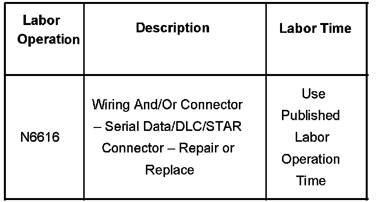

Computers/Control - No Start/Loss Of Low Speed LAN/DTC's
Bulletin No.: 06-08-45-007Date: September 12, 2006
TECHNICAL
Subject:
No Start/Loss of Low Speed LAN, DTCs Set (Repair/Reroute Wiring)
Models:
2007 Cadillac Escalade Models
2007 Chevrolet Avalanche, Silverado (New Style), Suburban, Tahoe
2007 GMC Sierra (New Style), Yukon Models
Condition
Some customers may experience a no start condition and a loss of low speed LAN communications at times. This concern is often accompanied by several communication codes in several modules.
Cause
This concern may be caused by the wiring harness under the passenger seat being pinched between the passenger's seat track and the Rear Parking Aid (RPA) module.
Correction
If the wiring harness is found to be pinched in this specified area, the technician should repair the wiring harness as needed and route the harness to the side of the RPA module. Use a zip tie to properly secure the harness in place.
After any repair, cycle the front passenger seat forward and back to make sure that the harness has proper clearance.
Warranty Information

For vehicles repaired under warranty, use the table.

Disclaimer